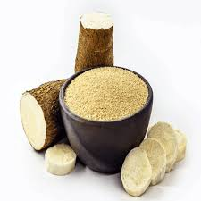
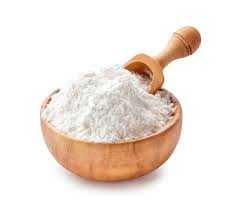
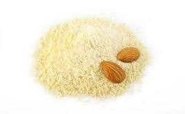

Farinha de trigo
A farinha de trigo é um pó fino obtido da moagem do grão de trigo

Farinha de rosca
Diferentemente de outros tipos de farinha, provenientes de grãos, raízes e até oleaginosas, a farinha de rosca é feita pela moagem de pão seco

Farinha de Mandioca
A farinha de mandioca, também conhecida como farinha-da-terra, farinha-de-pau, farinha-de-guerra, farinha suruí, farinha de mesa e farinha seca, é a farinha comum, branca e fina, feita a partir da raiz de mandioca.
Farinha de milho
A farinha de milho é um produto da moagem do grão de milho, seja seco ou úmido, e é um ingrediente comum em diversas cozinhas, especialmente no Brasil, onde é utilizada em uma variedade de pratos.

Farinha de Aveia
A farinha de aveia é extraída a partir da moagem interna dos grãos, descartando as fibras e mantendo os minerais, proteínas e carboidratos.

Farinha de arroz
farinha obtida a partir da moagem de grãos de arroz.
Farinha de centeio
A farinha de centeio, também conhecida como farinha de centeio integral ou fina, é um ingrediente versátil e nutritivo usado na panificação e confeitaria.

Farinha de grão de bico
A farinha de grão de bico é um alimento rico em nutrientes, sem glúten e pode ser utilizada como substituta da farinha de trigo em diversas receitas.

Farinha de Amêndoa
A Farinha de Amêndoa é produzida a partir da moagem de amêndoas sem pele, após a extração do óleo da oleaginosa.
